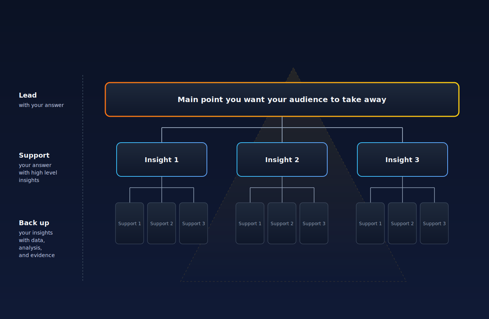

Data Storytelling
In this article, I wanted to delve into some principles that underpin data visualization and the way data is communicated.
Masterclass notebooks
For those interested, I have created notebooks with code explanations and output:
Introduction
In the current business landscape, characterized by a hypertrophy of data (Big Data has been discussed for years now), organizations face a problem:
The exponential increase in information availability does not linearly translate into improved decision quality.
On the contrary, however, this often generates analytical paralysis. This phenomenon is not attributable to the absence of data extraction or processing technologies, areas in which Data Engineering and Data Science have made giant strides in recent years, but rather lies more in communication and reporting.
Data Storytelling, far from being a mere aesthetic exercise or an accessory "soft skill" to embellish presentations, today represents an operational problem as important as the ability to perform solid analyses. It is, to all intents and purposes, a discipline of "decision engineering". You have no idea how many times I've seen a potentially beautiful project poorly communicated.
When the transfer of analytical insights from technical teams to strategic decision-makers (C-Level, VP, Directors) fails, the organization usually pays the price in a devastating way. Gartner estimates that poor data quality costs average organizations approximately $12.9 million annually in wasted resources and missed opportunities. This concept extends from the beginning (how data is collected and organized) all the way to its ineffective communication and interpretation. If we broaden our view to the U.S. economy as a whole, studies reported by the Harvard Business Review indicate that miscommunication and erroneous data drain up to 3 trillion dollars annually.
The report, dashboard, or executive memo are not artifacts unto themselves but constitute a kind of UI (User interface) for the decision-making process.
A poor interface, which perhaps imposes an excessive mental load or hides causal relationships behind certain aggregations, nullifies the ROI.
In a pragmatic adoption path for Artificial Intelligence, the ability to narrate data with rigor becomes even more crucial: AI acts as an accelerator for content and analysis production, but without a rigorous control and communication framework, it risks also accelerating the spread of "statistical hallucinations and decision biases".
In this article, I want to try to dismantle the myths of "Data Storytelling" as a creative art, redefining it through protocols derived from cognitive psychology, graphic perception theory, and the most rigorous management methodologies (such as Amazon's narrative model or the principle of McKinsey's Pyramid). The goal is to provide an operational article to effectively transform the report writing phase. To do so, I will try to use a more formal tone than usual (as much as possible XD).
Theory: Science of perception
The first step to changing mindset is to abandon subjective intuition ("I like this chart") in favor of scientific evidence on how the human brain processes visual and textual information.
The cognitive load theory (Cognitive Load Theory)
Cognitive Load Theory (CLT), developed by psychologist John Sweller in the late 1980s, provides the theoretical basis for understanding why most business dashboards fail.
The theory postulates that human working memory has an extremely limited capacity to process new information simultaneously. When an executive is faced with a report, their brain must manage three types of cognitive load, and the goal of the report designer must be to optimize this balance. By "report," I mean both classic reports and presentations, dashboards, etc.
The first type is the Intrinsic Cognitive Load (Intrinsic Load). This is determined by the inherent complexity of the information itself. For example, observing a formula with integrals or mathematical laws governing the market requires an ineliminable mental effort, linked to the difficulty of the concept. This load is necessary and cannot be eliminated without trivializing the content.
The second, and more insidious, is the Extraneous Cognitive Load (Extraneous Load). This load is generated by the way the information is presented. Every visual element that does not directly contribute to the understanding of the data. Some examples are heavy grids, 3D effects, legends separated from the chart, non-semantically coded colors, redundant text. All of this forces the brain to waste precious resources decoding the interface rather than the message. What I have noticed from my (brief) experience and by listening to the people I have consulted for, in business reporting, extraneous load is the number one enemy! In fact, this can potentially transform analysis into noise. A poorly designed dashboard, which forces the eye to "ping-pong" between a legend and the bars of a chart, increases the extraneous load to the point of saturating working memory, preventing learning or decision-making. In this regard, I leave you the link to an article on Medium.
Finally, there is the Germane Cognitive Load (Germane Load). This refers to the effort required to transfer short-term information to long-term knowledge and understanding through schemas.
"Unlike intrinsic and extraneous cognitive load, germane cognitive load does not constitute an independent source of cognitive load. It simply refers to the working memory resources available to deal with the interactivity of elements associated with intrinsic cognitive load." (Sweller, p. 126)
As such, germane cognitive load would involve learning activities and mental processes that attempt to constructively link information to long-term knowledge schemas, using tools such as the use of mnemonic devices, the activation of prior knowledge, etc.
Essentially, it is the "good load," the one that leads to insight and action.
The goal of Data Storytelling is to minimize extraneous load to free up cognitive resources to dedicate to germane load, allowing the decision-maker to better assimilate data and understand not only what is happening, but why and how to intervene.
| Type of Cognitive Load | Operational Definition in Reporting | Example of Error (Bad Practice) | Design Goal |
|---|---|---|---|
| Intrinsic | Complexity inherent in the data and the problem (e.g., EBITDA calculation). | Over-simplifying by omitting necessary causal variables. | Manage through logical segmentation (Pyramid Principle). |
| Extraneous | Unnecessary effort caused by poor design or "chartjunk". | 3D charts, double $Y$ axes, misplaced legends, unnecessary decorations. | Drastically minimize (Data-Ink Ratio). |
| Germane | Productive effort to create mental models and decisions. | Lack of synthesis or recommendation ("So What?"). | Maximize by providing clear context and narration. |
Hierarchy of graphical perception
If CLT tells us how much the brain can process, the studies by William Cleveland and Robert McGill (1984) tell us how the brain decodes visual information with greater or lesser accuracy. Their research established a fundamental hierarchy of perceptual tasks, ordered from most accurate to least accurate.
At the top of the hierarchy, we find position on a common scale. The human brain is extraordinarily skilled at comparing the position of points or bars aligned on a single axis (as in a bar chart or a dot plot). This perceptual task allows distinguishing minimal differences with great accuracy. In their article, they argue that a perceptual task is considered more accurate if it leads to human judgments closer to the actual quantities encoded. The experiments conducted confirm that judgments based on position are significantly more accurate than those based on length or angle.

Figure 01: Barplot (left) and dotplot (right): two different representations of the same perceptual task, position on a common scale.
Segue, con un leggero degrado dell'accuratezza, la Posizione su scale non allineate (Positions along nonaligned scales). Questo compito si verifica quando si confrontano valori rappresentati su scale identiche ma spazialmente separate, ad esempio nei small multiples o in pannelli grafici affiancati (juxtaposed graphs), dove ogni pannello mantiene la propria scala.
Il motivo per cui questa codifica resta più affidabile della semplice lunghezza è che la presenza della scala, anche se non condivisa fisicamente sullo stesso asse, offre all'occhio ulteriori visual cues di riferimento. In pratica, non stiamo stimando soltanto “quanto è lunga una barra”, ma “dove cade un valore” rispetto a un contesto visivo strutturato.
Un esempio classico è quello dei rettangoli incorniciati: se confronti due barre isolate, il compito percettivo è la stima della lunghezza (meno precisa); se invece inserisci le stesse barre in una cornice di riferimento, il giudizio si sposta sulla posizione dell'estremità della barra rispetto al bordo superiore della cornice, quindi su una scala non allineata.
Qui entra in gioco anche la Legge di Weber: la cornice crea una porzione “vuota” sopra la parte piena. Quando due barre sono simili, la differenza relativa tra le porzioni vuote può risultare più ampia e quindi più facile da cogliere rispetto alla differenza tra le porzioni piene. In sintesi, anche senza un asse condiviso, un riferimento visivo coerente migliora in modo netto la precisione del confronto.

Figura 02: Confronto tra barre semplici (in alto) e barre incorniciate (in basso): la cornice introduce un riferimento che rafforza il giudizio percettivo.
Scendendo nella gerarchia, troviamo la Lunghezza, la Direzione e l'Angolo. La lunghezza occupa il terzo livello (a pari merito con direzione e angolo), subito dopo la posizione su scale non allineate. Sembra un compito naturale, ma i risultati sperimentali di Cleveland e McGill mostrano chiaramente che è meno affidabile della posizione.
Le evidenze quantitative sono nette:
- gli errori medi nei giudizi di lunghezza risultano circa dal 40% al 250% più alti rispetto ai giudizi di posizione;
- il 78% dei grandi errori osservati negli esperimenti ricade nei compiti basati sulla lunghezza;
Nonostante questo, la lunghezza resta comunque preferibile ad area e volume. In termini psicofisici (Legge di Stevens, $p = k a^{\beta}$), la lunghezza ha un esponente $\beta$ vicino a 1: la percezione è quindi quasi lineare e molto meno distorta rispetto a codifiche areali o volumetriche, dove la sottostima è più marcata.
Dal punto di vista del design, i casi più problematici sono:
- Divided bar charts (barre impilate): solo il segmento alla base beneficia di una scala comune; i segmenti superiori richiedono confronti di lunghezza e diventano rapidamente difficili da confrontare tra categorie diverse.
- Curve-difference charts: quando due serie sono rappresentate come linee, il lettore dovrebbe stimare la distanza verticale tra curve (lunghezza), ma l'occhio tende a inseguire la distanza minima locale tra i tracciati, introducendo errori anche grossolani; in pratica, è un compito percettivo quasi impossibile da svolgere con precisione.
Questo spiega perché, come visto con i rettangoli incorniciati, la posizione su scale non allineate rende meglio che la lunghezza: quando introduci un riferimento visivo stabile, il confronto percettivo diventa più robusto. Operativamente, quando possibile conviene sostituire codifiche basate sulla lunghezza (es. molte barre impilate) con grafici che privilegiano la posizione, come i dot chart.
Per angolo e direzione il quadro è più sottile: non sono compiti equivalenti, anche se condividono lo stesso livello della gerarchia.
Angolo (e problema dei pie chart).
I grafici a torta richiedono soprattutto giudizi angolari, ed è qui che emergono i limiti maggiori. Nel Position-Angle experiment, i giudizi basati sulla posizione risultano quasi due volte più accurati (fattore ~1,96) rispetto a quelli basati sull'angolo; inoltre, l'88% dei grandi errori osservati proviene proprio dai compiti angolari. Qui compare un bias sistematico di sottostima, soprattutto nella fascia 25%-50%. La conseguenza operativa che quando l'obiettivo è il confronto quantitativo, conviene sostituire il pie chart con bar chart o, meglio ancora, dot chart.Direction (slope/gradient). In Cartesian charts, direction is useful for quickly recognizing patterns (linearity, non-linearity, regime changes). If the same data is presented without the slope cue, reading the overall structure becomes much more difficult. That said, precisely estimating a slope value remains less accurate than reading a position on a scale. For this reason, when numerical accuracy is needed, it is often useful to transform the problem into a position task (for example, by calculating slopes and reporting them as points on a scale, as suggested by Tukey in some diagnostic contexts).
In summary: angle is a weak task to avoid for precise comparisons (hence pie charts should be limited), while direction is very effective for grasping trends and the overall shape of the data. However, when moving from qualitative reading to quantitative estimation, the best criterion always remains the same: bringing the comparison back to a position on a common scale.
At the bottom of the hierarchy, we find Area and Volume for encoding quantitative magnitudes. Here, the difference compared to length is well explained by Stevens' psychophysical law $$p = k a^{\beta},$$ which links perceived intensity and real intensity:
- Length: $\beta \approx 1$, so perception is almost linear (physical doubling ≈ perceived doubling).
- Area: $\beta < 1$, typically around 0.7, so we tend to underestimate; to make a shape appear "double," the actual area must grow more than double.
- Volume: $0.5 \leq \beta \leq 0.7$, with even stronger underestimation; the judgment of 3D volumes on 2D media is particularly weak.
Therefore, charts that encode quantities using area or volume (bubble charts, pie charts, 3D bars) make comparisons less precise. If a pie chart is already inferior to a dot chart because it requires judgments on angle/area, a volumetric encoding further worsens the perceptual error.
In the hierarchy of perceptual tasks for quantitative data, color saturation (along with shading) is at the lowest level: it is the least accurate method for communicating numbers, inferior to position, length, area, and volume.
Hue (red, blue, green, etc.) is deliberately excluded from quantitative encoding because there is no unique and unambiguous ordering "from smallest to largest." For this reason, hue is suitable only for categorical variables, not for continuous real variables.
Practical application in maps: statistical area maps (choropleth) color geographical regions based on a value and thus force the reader into a low-accuracy perceptual task. When the goal is to compare quantities precisely, it is preferable to replace them with representations that bring the comparison back to position (for example, framed-rectangle charts), instead of relying on color saturation.

Figure 03: On the left, the choropleth map requires comparisons based on saturation. On the right, the framed-rectangle chart maintains the geographical reference but shifts the comparison to the position of the top edge of the bars.
Attention is all WE need
To guide the decision-maker's attention without exhausting their cognitive load, the designer must leverage so-called pre-attentive attributes.
These are visual characteristics (color, size, orientation, movement) that the brain processes in less than 200 milliseconds, even before conscious attention intervenes. The strategic use of color, for example, is not to "make the chart beautiful," but to signal the exception. In a sales performance dashboard, using a neutral gray color for all data in line with the budget and a bright red only for underperforming markets leverages pre-attention to tell the reader of that chart: "Look here". This reduces visual search time and lowers extraneous load.
This concept aligns perfectly with Edward Tufte's principle of the Data-Ink Ratio. Tufte defines this ratio as the proportion of ink (or pixels) used to represent the actual data relative to the total ink of the chart.
$$\text{Data-Ink Ratio} = \frac{\text{Data Ink}}{\text{Total Ink}}$$
L'imperativo operativo è cancellare tutto ciò che non è relativo al dato (non-data-ink), ovvero che non aggiunge informazioni sui dati o che è ridondante. Griglie pesanti, sfondi colorati, bordi di contorno, effetti 3D: tutto questo è "chartjunk" che deve essere rimosso per massimizzare il segnale rispetto al rumore. Un grafico con un alto Data-Ink Ratio è spoglio, essenziale e focalizza l'intera potenza cognitiva del lettore sui numeri e sui trend.
Practical examples of applying the principle are:
- Bar Charts
- Scenario: an analyst needs to show total sales by region, highlighting that Molise is underperforming.
- Initial problems: overly prominent grids that distract; different colors for each region without reason; redundant legend; useless axis labels ("Sales", "Region") given that the title already explains the content.
- Proposed optimization:
- Removal: grids and the vertical axis are eliminated, writing the values directly above the columns. Axis labels and the legend are also removed.
- Color: instead of coloring each bar differently, color is used only for the Southern region (the one of interest), leaving the others neutral. This immediately draws attention to the key message: "the South is performing poorly".
- Line Charts
- Scenario: report on profits of certain product categories, showing small losses in some months.
- Initial problems: redundant labels ("Profit", "Month") that are obvious from the context, colored areas below the zero line that take up too much visual space ("overkill"), and the use of a separate legend.
- Proposed optimization:
- Simplification: the colored area is replaced by a simple line that distinguishes positive from negative values.
- Direct labeling: the legend is removed and category names are placed directly next to the corresponding lines. This saves space and makes reading more immediate.
- Pie Charts
- Scenario: show that the Office Supplies category constitutes the majority of orders.
- Initial problems: display of exact percentages (not necessary if the proportion is overwhelming and obvious); use of a legend.
- Proposed optimization:
- Transformation into Doughnut Chart: it is suggested to switch from a pie chart to a doughnut chart. This reduces the total ink used and frees up space in the center.
- Integrated title: the empty space in the center of the "doughnut" is used to insert the main title or label, saving further space.
In all examples, the goal is to remove non-data-ink (grids, 3D effects, unnecessary colors) and redundant data-ink (duplicate legends, obvious labels) to clearly highlight the data. However, one must not overdo it, and must ensure that the chart remains understandable for the target audience.
How to structure business reports
Having scientifically correct charts is not enough if there is no logical structure connecting them. Narrative in an enterprise context should not be an Odyssey, but a logical deductive or inductive argument structured for decision-making efficiency.
The Pyramid Principle (Minto) and Top-Down communication
The reference framework for executive communication is the Pyramid Principle, codified by Barbara Minto at McKinsey. The traditional academic structure (Introduction → Methodology → Analysis → Conclusions) tends to be unsuccessful in business because it forces the reader to wait until the end to understand the point. It is advisable, to save time, to work with an inverted structure. The pyramid requires starting with the Lead (Governing Thought), which is the Guiding Thought or the main answer. This is the single idea, recommendation, or conclusion one wishes to convey. Below the apex are the Key Lines: 3 or 4 main arguments that logically and factually support the governing thought. At the base level is the Support: the data, charts, tables, and detailed analyses that prove the validity of the Key Lines.1
This way, the narrative is made efficient: those who listen or read immediately understand the thesis. If they trust it, they can stop or skip to the actions. If skeptical, they can descend one level in the pyramid to verify the argument (drill-down).
This is an example of a "MECE" (Mutually Exclusive, Collectively Exhaustive) approach: arguments must be distinct from each other and entirely cover the problem space.

*Figure 04: Pyramid Principle Diagram: from the apex with the Lead (Governing Thought), to the levels of Key Lines and Support.*
The SCQA Framework
Every effective report must answer a question that exists, or should exist, in the recipient's mind. The SCQA (Situation, Complication, Question, Answer) model is the standard for defining a report's introduction. The following points must be addressed in this section:
- Situation (Situation): Describes the known and uncontroversial state of affairs. It serves to align all readers on the initial context (e.g., "In Q3, EMEA revenue was €50M, in line with historical data").
- Complication (Complication): Introduces the new element, problem, or opportunity that alters the situation and creates tension (e.g., "However, the contribution margin decreased by 15% due to unexpected increases in logistics costs").
- Question (Question): The implicit question that arises from the complication (e.g., "How can we recover profitability in Q4 without compromising volumes?").
- Answer (Answer): This point is the report's thesis, which coincides with the Governing Thought of the Pyramid. It must be simple and clear in the introduction and well-defined in the conclusion (e.g., "We recommend an immediate review of shipping rates for orders under €50 and shifting the sales mix towards the Premium product").
The objective of this sequence is to capture the reader's attention and justify the report's very existence.
Amazon 6-Pager and "slide-cide"
In the business world, slides (PowerPoint) are often seen as a "low-resolution" communication vehicle. Jeff Bezos "banned PowerPoint" from Amazon's executive meetings in favor of "6-page Narrative Memos".
The reason is entirely cognitive: bullet points, typical of slides, allow for hiding weaknesses in thinking. If we write "• Cost increase" and "• New supplier" one below the other, we leave the causal relationship to the reader's interpretation unless explicitly stated by the speaker. The problem remains that if the speaker does not emphasize that point, the causal link might go unnoticed.
On the other hand, writing complete sentences, with subject, verb, and object, forces the author to explicitly state the connection: "The cost increase was caused by the onboarding of the new supplier." If the logic is flawed, narrative writing exposes it clearly.
Operational structure of the Memo
What we see here is nothing more than an adapted version of Amazon's template:
- Introduction: describes the context (background) and the report's intent (i.e., using SCQA).
- Goals: defines the main metrics for evaluating various options upfront.
- Tenets: lists guiding principles and relevant, non-negotiable assumptions that guide decisions.
- State of the business: this describes the current ("as-is") situation of the activity or project. Supporting tables and graphs should be included in the appendix.
- Lessons learned: analyzes what has happened in the past and what has been learned from those events.
- Strategic priorities: outlines the detailed plan to achieve the success metrics described in the "Goals" section.
- Appendix: contains additional data, tables, supporting documents, and further context that does not fit into the main narrative flow.
Meetings at Amazon begin with 20-30 minutes of silent "study hall," where everyone reads the memo. Only then does the discussion begin. This levels the playing field, ensures that everyone has consumed the data, and dramatically raises the quality of the debate, shifting it from understanding facts to interpretation and decision-making.
Executive Summary: The art of synthesis
If you are reading this article and have reached this point, I think you have often found yourself reading long papers or blog posts. I am equally certain that, especially for papers, to decide whether to discard or read that document, you primarily rely on the Executive Summary.
The Executive Summary is often, in fact, the most read part, and not always the best written. It should not be a "teaser" ("in this report we will see..."), but rather a complete spoiler. It must be able to replace the entire document.
An effective structure for the Executive Summary of a Data Science report must contain four key elements:
- Claim (Thesis): The main conclusion. The report's thesis and what you want to convey, leveraging all necessary data.
- Evidence (Proof): That "game-changing" statistical result that 100% supports the thesis. Note, not all data, but only the "killer stat," meaning the strongest one.
- Caveat (Risks/Limitations): Here, intellectual honesty about the analysis's limitations is required (e.g., "Data limited to the US market," "Model confidence at 85%"). This increases the author's credibility.
- Next Steps (Action): What is requested from the decision-maker (approval, budget, acknowledgment).
Common errors and statistical paradoxes
The application of Data Storytelling acts as a quality control mechanism (Quality Assurance). By attempting to build a causal narrative, interpretive errors often emerge that would go unnoticed in a simple table.
Simpson's paradox: when aggregation lies
One of the most dangerous errors in aggregated reporting is Simpson's Paradox. It occurs when a trend appears in several groups of data but disappears or reverses when these groups are combined. This paradox is frequent in marketing and sales and can lead to decisions opposite to reality.
Let's look at an example I found in this blog on performance marketing that illustrates the idea very well.
Let's imagine we need to decide which of two campaigns (A and B) to keep active, based on the Conversion Rate (CR).
| Campaign | Total Visits | Total Conversions | Conversion Rate (CR) | Apparent Decision |
|---|---|---|---|---|
| Campaign A | 2500 | 460 | 18,4% | WINNER |
| Campaign B | 3300 | 450 | 13,6% | LOSER |
Looking at the aggregated data, Campaign A appears significantly superior (18.4% vs 13.6%). A manager would decide to cut B.
However, disaggregating the data by customer segment (High Value vs Low Value) reveals a different and interesting reality:
| Segment | Campaign A (CR) | Campaign B (CR) | Real Winner |
|---|---|---|---|
| High Value (High propensity) | 58,0% (290/500) | 60,0% (180/300) | Campaign B |
| Low Value (Low propensity) | 8,5% (170/2000) | 9,0% (270/3000) | Campaign B |
Campaign B is superior in both segments taken individually! But a question naturally arises:
Why does the total say the opposite?
Because Campaign A had the "luck" of having a higher percentage of traffic from the High Value segment (which naturally converts much more), while Campaign B was penalized by receiving most of its traffic from the Low Value segment.
This is a "Mix Effects" problem. Without this narrative disaggregation, the report would have led to canceling the technically more performant campaign (B). Rigorous Data Storytelling always requires asking:
"Is there a latent variable (confounder) that is distorting the average?".
I'll leave you with a way to test it in R.
The Selection Bias
Many reports suffer from Selection Bias or Survivorship Bias. Analyzing customer satisfaction based only on support tickets or NPS (Net Promoter Score) surveys introduces an enormous bias: we are only listening to those who decided to speak or who remained customers. Dissatisfied customers who left silently are invisible in the data. A rigorous report must explicitly state this caveat: "The analysis reflects the sentiment of active and responding customers, not the totality of the user base".
 Figure 05: Types of Selection Bias
Figure 05: Types of Selection Bias
Common types of Selection Bias
- Sampling Bias (Sampling Bias) It occurs when certain groups in the population have a systematically higher probability of ending up in the sample than others. The sample no longer represents the real population, and the results are distorted.
It can arise from:
- convenience (e.g., interviewing users from only one geographical area),
- technical limitations (e.g., tracking only specific mobile traffic),
- intentional choices (e.g., testing only high-spending customers).
Example: An e-commerce tests a new checkout method only on logged-in users. Since these users are, on average, more engaged and more likely to purchase, the abandonment rate during the purchase phase appears much lower than the actual one.
L'impatto si traduce in:
- scarsa generalizzabilità degli insight,
- metriche sovra o sottostimate,
- decisioni di prodotto o strategiche fuorvianti.
- Attrition Bias (Attrition Bias)
This occurs when, over time, some participants drop out of a study or funnel, and conclusions are drawn only from those who remain. If those who drop out are different from those who stay, the final result is distorted.
Survivorship bias is closely related: only "survived" or successful cases are observed, ignoring those that failed/were interrupted.
Example:
A SaaS measures activation in its new onboarding but only analyzes those who complete the entire journey, excluding those who exit early. It concludes that the flow works well, when in reality many users abandon it halfway. Another classic example is that of warplanes during World War II.
The impact translates into:
- overestimation of success rates,
- failure to identify friction points.
- Self-selection Bias (Self-selection Bias)
This occurs when individuals autonomously decide whether to participate (surveys, feedback, opt-in studies) instead of being randomly selected. Those who participate tend to have stronger motivations or more extreme opinions.
Example:
A product team collects feedback with a voluntary in-app survey. Mostly very satisfied or very frustrated users respond; the "silent majority" remains excluded.
The impact translates into:
- distorted view of sentiment and satisfaction,
- UX/product decisions based on polarized opinions,
- misalignment between internal hypotheses and real needs.
- Exclusion Bias (Exclusion Bias)
This manifests when certain people or data are intentionally or accidentally excluded during design or analysis (filters, inclusion criteria, tracking issues).
Example:
An e-commerce team removes all sessions under 30 seconds, deeming them irrelevant. Some of those sessions included quick purchases from returning customers: high-value behaviors are lost.
The impact translates into:
- loss of important insights on specific groups,
- metrics not representative of real usage,
- weak conclusions on product/campaign performance.
- Observer Bias (Observer Bias)
The expectations of researchers or analysts influence data collection, interpretation, or reporting. In practice, more weight is given to signals that confirm an initial hypothesis.
Example:
In a user test on a new product page, the facilitator unintentionally suggests answers ("Don't you find this version simpler?"), highlights problems in the old UI, and minimizes hesitations in the new one.
The impact translates into:
- distorted insights and confirmation of biases,
- changes implemented on subjective bases,
- reduced reliability of qualitative evidence.
- Non-Response Bias (Non-Response Bias)
This occurs when those who do not respond to surveys/invitations are systematically different from those who do respond. The absence of these users alters the conclusions.
Example:
An online store sends a post-purchase survey: only 10% respond, mostly regular customers. The results indicate high satisfaction but ignore users who are less engaged or dissatisfied.
The impact translates into:
- overestimation of satisfaction, loyalty, and product-market fit,
- failure to identify friction and unmet needs,
- misleading KPIs for business decisions.
How to identify Selection Bias
Identifying selection bias early is crucial to avoid incorrect conclusions. Some useful guiding questions might be:
- Is the selection random or non-random?
If it occurs for convenience, availability, or self-nomination, the sample might not reflect the real population. - Does the sample truly represent the target population?
Check relevant variables (age, geographical area, device, purchase behavior, etc.) and possible under-representations. - Which groups have been excluded, even unintentionally?
Distribution channels, survey times, or technical limitations can leave out key segments (e.g., mobile users). - Are there high drop-offs in specific segments?
Asymmetric abandonments (e.g., first-time or low-intent users) signal attrition bias. - Is the sample size adequate and varied?
Small or homogeneous samples limit generalizability and amplify distortion.
How to reduce Selection Bias
- Define a representative sample
Segment before testing (new vs returning, mobile vs desktop), compare sample composition with the total user base, and verify actual coverage. - Apply true randomization
Each user must have an equal probability of group assignment. Avoid assignments influenced by timing or uncontrolled segmentation. - Track drop-off and attrition along the funnel
Analyze where and when users exit, compare completers vs non-completers, and collect feedback at abandonment points. - Limit self-selection
Combine voluntary surveys and feedback with passive behavioral data (analytics, heatmaps) and distribute invitations randomly. - Validate with multiple sources
Triangulate qualitative and quantitative methods (user tests, analytics, surveys), compare different platforms, and analyze both successful and failed journeys.
AI Adoption for Dataviz
In the AI adoption journey, the role of Large Language Models (LLMs) in reporting should not be that of an oracle ("Tell me what to do"), but of a strict professor. AI excels at identifying inconsistencies in text and data when properly instructed.
Instead of asking AI to "write a report," the analyst should provide the report draft and raw data, asking it to critique them. This technique, known as Adversarial Prompting, allows simulating the scrutiny of a skeptical executive or an experienced Data Scientist. Here is a structured prompt example for validation:
"Act as a Senior Data Scientist with econometrics experience and a risk-averse CFO. Analyze the following report text and associated data tables.
1. **Causality Check:** Identify every sentence that implies causality (e.g., 'X led to Y', 'thanks to X...') and verify if the provided data statistically supports such a connection or if it might be a simple correlation.
2. **Bias Detective:** Report potential cases of Simpson's Paradox. Are there suspicious aggregations that might hide opposite trends in subgroups?
3. **Tone Check:** Highlight all qualitative adjectives (e.g., 'significant', 'enormous', 'concerning') that are not immediately followed by a precise number and context (benchmark).
4. **Executive Summary Audit:** Verify if the first paragraph contains the main conclusion (BLUF) or if it 'buries the lede' at the end.This approach keeps the human at the center of the decision ("Human-in-the-loop"), using AI to enhance rigor and reduce errors of distraction or confirmation biases.
Conclusions
The adoption of Data Storytelling in an enterprise context is not a one-off training project, but a cultural paradigm shift. It means moving the organization from a culture of data transmission to a culture of meaning sharing.
For technology and business leaders, the operational steps are clear:
- Language standardization: Define a unique glossary of metrics.
- Principles Training: Teach teams not only the tools (PowerBI, Tableau) but the science of perception (Cleveland, Tufte) and structured logic (Minto).
- Review process: Institute "Report review" sessions where logical structure and clarity are critiqued, not just the numbers.
- AI Governance: Integrate AI as a logical auditor into analytics workflows.
Only by applying this engineering rigor to communication can companies bridge the gap between the enormous potential of their data and the actual quality of their strategic decisions. In a world dominated by AI, the human ability to discern and narrate (and thus decide) with clarity becomes the most important asset.
Bibliography
10. References
- AI's potential role in data storytelling (INMA)
- The Real Cost Of Bad Data: How It Silently Undermines Pricing And Growth (Forbes Communications Council)
- Bad Data Costs the U.S. $3 Trillion Per Year (Harvard Business Review)
- Cognitive Load Theory (EdTech Books)
- The Cognitive Cost of Dashboard Design: Data Visualisation is a Neuroscience Problem (Medium)
- Graphical Perception: Theory, Experimentation, and Application to the Development of Graphical Methods (JASA, 1984)
- Visual Perception and Pre-Attentive Attributes in Oncological Data Visualisation (PMC)
- Data-Ink Ratio (InfoVis Wiki)
- The Pyramid Principle: What It Is + A Case Example (My Consulting Offer)
- Minto Pyramid (Untools)
- Minto Pyramid & SCQA (ModelThinkers)
- Jeff Bezos: This is the 'smartest thing we ever did' at Amazon (CNBC)
- The Amazon 6-Pager Memo: Better Than Powerpoint? (Medium)
- Executive summary: How to write one (with a template) (Diligent)
- Simpson's Paradox for Marketing Analysts: A Guide to Avoiding the Road to Distorted Assumptions (Revlitix)
- Visualizing Statistical Mix Effects and Simpson's Paradox (Google Research)
- 21.2 Simpson's Paradox | A Guide on Data Analysis (Bookdown)
- Selection Bias: Definition, Types and Examples (Omniconvert)
- Adversarial Prompt Engineering: The Dark Art of Manipulating LLMs (Obsidian Security)